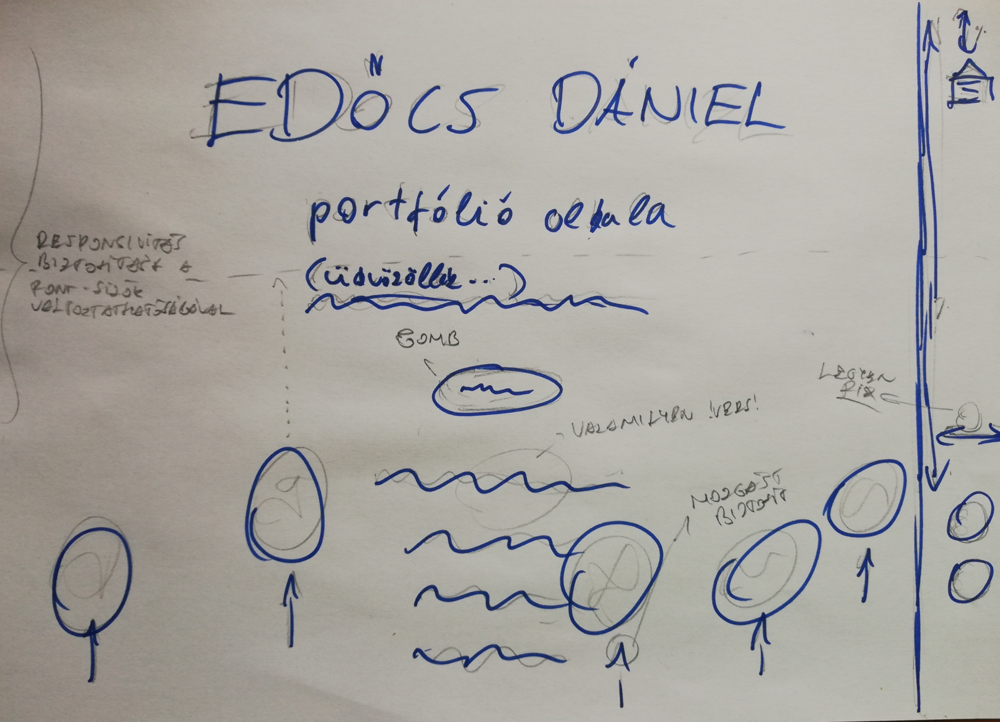
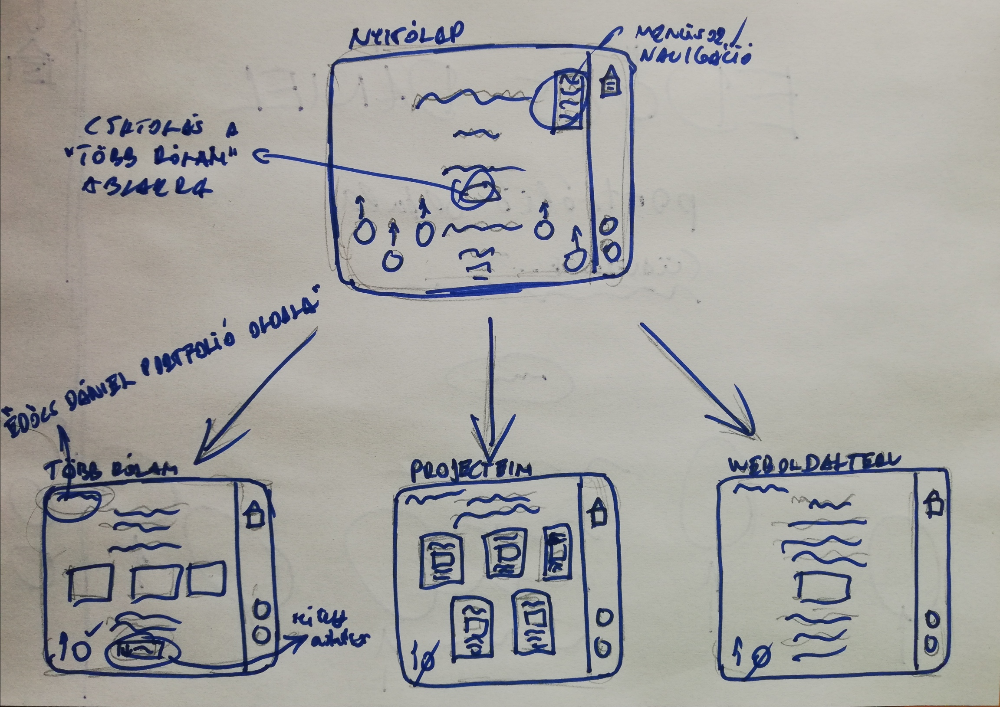
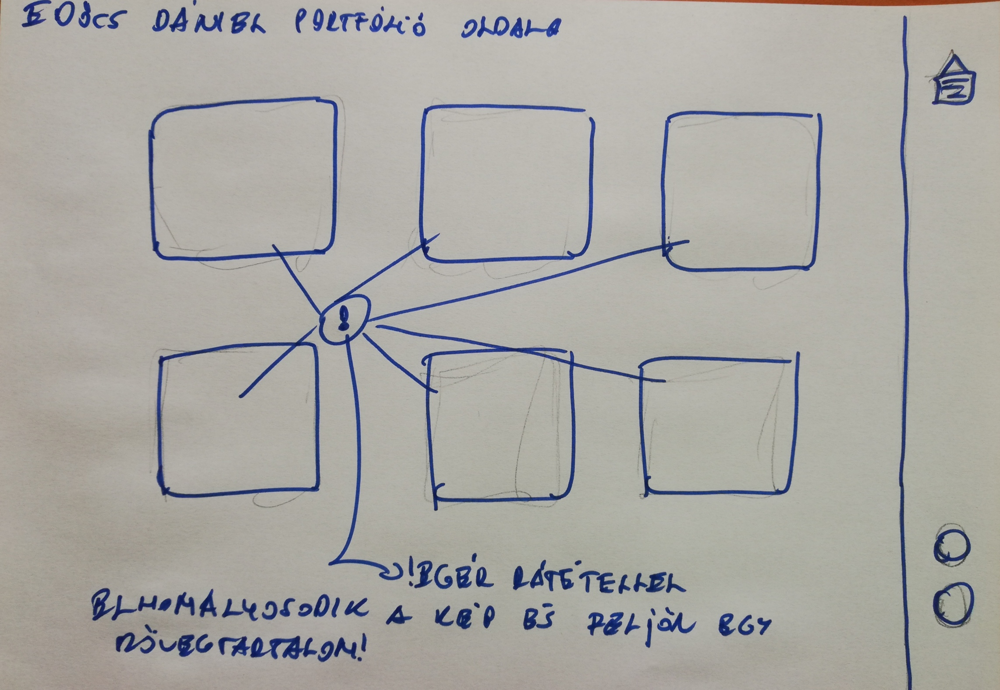

Edőcs Dániel portfólió oldala
Tervezés
A weboldal koncepciójának tervezésének a kezdetéhez egy másmilyen, szokatlan megközelítéssel végbemenő valamilyen szintű design felfűzésének az álmával kezdtem hozzá. Arra nagyon figyeltem, hogy a megszerzett programozási tudásomhoz mérten építsem fel a weboldal koncepcióját, miközben olyan elemeket használok amik kihívást jelentenek a számomra.
Először a fejemben elképzeltem, hogy hogy is szeretném, hogy kinézzen az oldal, majd a neten különböző designokat néztem, hogy milyen ötleteket tudnék beépíteni még a weboldalba, mik azok amik nagyon megfognak. Végül lerajzoltam, hogy hogy szeretném, hogy kinézzen a nyitólap.

Nyitólap
A nyitólapot szerettem volna nagyon egyszerűre és letisztulra csinálni, de azt is szerettem volna, hogy közben lehetőleg egy pozitív benyomást keltsen rólam, miközben a tudásomnak megfelelően a számomra legtetszetősebb design elemeket is megjelenítem az oldalon. Így jött egy külön gombnak, a mozgást magában rejtő buborékoknak és egy szívemhez közel álló versnek az ötlete.
"Több rólam" oldal
A gomb lenyomásával létrejövő “Több rólam” oldal tartalmát magam bemutatásása terveztem. Szerettem volna, ha az oldal tartalmaz több képet is rólam, illetve egy általános bemutatásra használható adatsort, amit egy legördülő ablakkal szerettem volna megolDani a változatosság kedvéért.
"Projecteim" oldal
A “Projecteim” oldalon szerettem volna bemutatni pár már meglévő munkámat, amik egymástól különböző érdeklődési körökre utalnak. Bár azért mondhatni sokat rajzolok, nem akartam rajzokat belerakni.

"Képek" oldal
A “Képek” oldal csak a weboldal készítés közben lett a koncepció része. Nagyon tetszett az egér rátétellel való képváltozás, ezért mindenféleképpen szerettem volna egy ilyen oldalt is a portfóliómba.

Kihívások
Mivel számomra a programozás ezen része is új volt, ezért a Html és a CSS használata már önmagában is kihívást jelentett, de pont ez tetszett benne a legjobban. A legnagyobb nehézséget az oldalak responsive-vá tétele, a navigációs rendszer kialakítása, valamint az egér rátétellel való képváltozás okozta. Nagyon tetszett ez a küzdelem, rengeteget teszteltem programozás közben, próbáltam megérteni, hogy milyen változással mit tudok elérni.
Felhasznált forrásaim